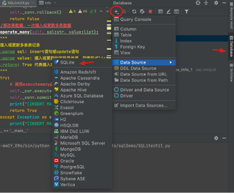
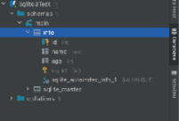
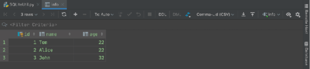

首页 > 编程笔记
Python操作SQLite数据库（非常详细）
SQLite 是一款轻量型的数据库，是遵守 ACID（atomicity, consistency, isolation, durability，原子性、一致性、隔离性、持久性）的关系数据库管理系统，它的设计目标是嵌入式，目前已经有很多嵌入式产品使用它。
SQLite 占用的资源非常低，在嵌入式产品中，可能只需要几百 KB 的内存。
SQLite 能够支持 Windows、Linux、UNIX 等主流的操作系统，同时能够结合多种编程语言，如 Tcl、C#、PHP、Java 等，它还有 ODBC 接口，相比 MySQL、PostgreSQL，在特定场景下，它的处理速度更快。
目前 SQLite 已经发展到版本 3。
SQLite 的优点在特定应用场景下表现突出，具体如下：
SQLite 的应用场景有嵌入式设备与物联网、数据分析、数据传输、文件归档、数据容器、内部或临时数据库、在演示或测试期间代替企业数据库、教学与培训、实验性 SQL 语言扩展等。
实际上，SQLite 是 Python 的内置数据库，换言之，我们不需要安装任何服务器端或客户端软件，也不需要让某个东西作为服务运行，只要用 Python 导入库并开始编码，就会有一个关系数据库管理系统，十分的便捷。
在 SQLite 中，存储分类和数据类型有一定的差别，如 INTEGER 存储分类可以包含 6 种不同长度的 INTEGER 数据类型，然而这些 INTEGER 数据被读入内存时，SQLite 会将其视为占用 8 字节的无符号整型。因此我们即使在数据表声明时明确了字段类型，也可以在该字段中存储其他类型的数据。
SQLite 中常见的数据类型如表1所示。
需要特别说明的是，尽管 SQLite 为我们提供了这种方便，但是考虑到数据库平台的可移植性，我们在实际的开发过程中应尽可能地保证数据类型存储和声明的一致性。
虽然 SQLite 是轻量级数据库，但是单个 SQLite 文件，能够存储 140TB 的数据。
sqlite3 是 Python 标准库中用于使用 SQLite 数据库的库，提供了轻量级文本数据库的全部功能。sqlite3 库的使用包括引入依赖、连接数据库、创建游标对象、执行 SQL 语句和关闭连接5步，下面我们介绍具体的步骤实现。
示例如下：
注意，游标是有状态的，它可以记录当前已经取到结果的第几个记录，因此我们只可以遍历结果集一次。在上面的查询示例中，如果执行 fetchone() 会返回空值，这一点在测试时需要注意。
更改（包括增加、更新和删除）数据时，我们要先调用 execute() 方法更改数据库中的数据，然后调用 Connection 对象的 commit() 方法进行提交，否则操作不会被保存：
游标对象只能遍历结果集一次，即每用完一次之后记录其位置，等到下次再取的时候是从游标处再取而不是从头再来，当取完所有的数据，这个游标对象就没有使用价值了。
我们不应该使用 Python 的字符串格式化符，如
示例如下：
代码清单1：SQLiteUtil.py
然后，新建表 info，如图2所示，表 info 包含 id、name 和 age 字段。
最后，在 if __name__== '__main__' 代码块中执行增、删、改和查，从图3可以看到，插入数据成功。
SQLite 占用的资源非常低，在嵌入式产品中，可能只需要几百 KB 的内存。
SQLite 能够支持 Windows、Linux、UNIX 等主流的操作系统，同时能够结合多种编程语言，如 Tcl、C#、PHP、Java 等，它还有 ODBC 接口，相比 MySQL、PostgreSQL，在特定场景下，它的处理速度更快。
目前 SQLite 已经发展到版本 3。
一、SQLite 简介
SQLite 是一个进程内的库，它实现了自给自足、无服务器、无须配置和支持事务，它的数据库就是一个文件。SQLite 的优点在特定应用场景下表现突出，具体如下：
- 与 MySQL 相比，它开源得更彻底，并且没有任何使用上的限制。
- 使用方便，在 2.5 以上版本的 Python 中使用 SQLite 无须配置，默认内置。
- 无须单独购买数据库服务，无服务器进程，配置成本为零。
- 整个数据库存储在一个文件中，数据导入、导出、备份和恢复都需要复制该文件，维护难度较低，有很好的迁移性。
- 读速度快，它在数据量不是很大的情况下速度较快，更重要的是省掉了一次数据库远程连接，没有复杂的权限验证，打开就能操作。
- 支持数据库大小至 2TB。
SQLite 的应用场景有嵌入式设备与物联网、数据分析、数据传输、文件归档、数据容器、内部或临时数据库、在演示或测试期间代替企业数据库、教学与培训、实验性 SQL 语言扩展等。
实际上，SQLite 是 Python 的内置数据库，换言之，我们不需要安装任何服务器端或客户端软件，也不需要让某个东西作为服务运行，只要用 Python 导入库并开始编码，就会有一个关系数据库管理系统，十分的便捷。
二、SQLite 的使用
1. 常用数据类型
SQLite 采用动态数据类型，会根据存入的值自动判断其数据类型。值的数据类型由值本身决定，而非存储容器。而传统的关系数据库采用静态数据类型，即数据类型在数据表声明时已确定。在 SQLite 中，存储分类和数据类型有一定的差别，如 INTEGER 存储分类可以包含 6 种不同长度的 INTEGER 数据类型，然而这些 INTEGER 数据被读入内存时，SQLite 会将其视为占用 8 字节的无符号整型。因此我们即使在数据表声明时明确了字段类型，也可以在该字段中存储其他类型的数据。
SQLite 中常见的数据类型如表1所示。
| 类型 | 描述 |
|---|---|
| NULL | 空值 |
| INTEGER | 有符号的整数类型 |
| REAL | 浮点数类型 |
| TEXT | 字符串，使用 UTF-8、UTF-16BE 或 UTF-16LE 存储 |
| BLOB | 二进制长对象，我们可以把图片、声音、视频等大文件以二进制形式存入数据库 |
需要特别说明的是，尽管 SQLite 为我们提供了这种方便，但是考虑到数据库平台的可移植性，我们在实际的开发过程中应尽可能地保证数据类型存储和声明的一致性。
提示
其他数据类型如下：- 布尔类型：SQLite 并没有提供专门的布尔存储类型，而是用整型1表示 true，0表示 false。
-
日期和时间数据类型：和布尔类型一样，SQLite 没有提供专门的日期时间存储类型，而是以 TEXT、REAL 和 INTEGER 类型分别表示该类型，其中：
- TEXT 类型表示“YYYY-MM-DD HH:MM:SS.SSS”格式的日期；
- REAL 类型表示以公元 4714 年 11 月 24 日格林尼治时间的正午开始算起的天数；
- INTEGER 类型表示以 UNIX 时间形式保存的数据值，即从 1970-01-01 00:00:00 到当前时间所流经的秒数。
虽然 SQLite 是轻量级数据库，但是单个 SQLite 文件，能够存储 140TB 的数据。
2. 常用方法
我们借助 sqlite3 库在 Python 中操作 SQLite 数据库，sqlite3 库的 API 接口如表2所示。| API | 描述 |
|---|---|
|
sqlite3.connect(database [,timeout,other optional arguments]) |
该 API 打开一个到数据库的连接。可以使用:memory:来在 RAM 中打开一个到 database 的数据库连接，而不是在磁盘上打开。如果数据库成功打开，则返回一个连接对象。如果一个数据库被多个连接访问，而其中一个修改了数据库，此时数据库将被锁定，直到事务提交。timeout 参数表示连接等待锁定的持续时间，直到发生异常断开连接。timeout 默认值是 5 秒。 如果给定的数据库名称 filename 不存在，则该 API 将创建一个数据库。我们如果不想在当前目录下创建数据库，可以指定带有路径的文件名，这样就可以在任意目录下创建数据库了。 |
|
connection.cursor ([cursorClass]) |
创建一个游标（cursor），该方法接受一个单一的可选的参数 cursorClass，该参数必须是一个扩展自 sqlite3.Cursor 的自定义游标类。 |
| cursor.execute(sql[,optional parameters]) | 执行一个 SQL 语句，该 SQL 语句可以被参数化，即使用占位符代替 SQL 文本，sqlite3 库支持问号和命名占位符这两种类型的占位符。 |
|
connection.execute (sql[,optional parameters]) |
是上面执行的由游标对象提供的方法的快捷方式，它通过调用游标方法创建了一个中间的光标对象，然后通过给定的参数调用游标的 execute 方法。 |
|
cursor.executemany (sql,seq_of_parameters) |
对 seq_of_parameters 中的所有参数或映射执行一个 SQL 命令。 |
|
connection.executemany (sql[,parameters]) |
一个由调用游标方法创建的中间的光标对象的快捷方式，然后通过给定的参数调用光标的 executemany 方法。 |
| cursor.executescript(sql_script) |
一旦接收到脚本，会执行多个 SQL 语句。它首先执行 COMMIT 语句，然后执行作为参数传入的 SQL 脚本。所有的 SQL 语句应该用分号;分隔。 |
|
connection.executescript (sql_script) |
是一个由调用游标方法创建的中间的光标对象的快捷方式，然后通过给定的参数调用光标的 executescript 方法。 |
| connection.total_changes() | 返回自数据库连接打开以来被修改、插入或删除的数据总行数。 |
| connection.commit() | 该方法用于提交当前的事务。如果未调用该方法，那么自上一次调用 commit() 方法以来所做的任何动作对其他数据库连接是不可见的。 |
| connection.rollback() | 该方法回滚自上一次调用 commit() 以来对数据库所做的更改。 |
| connection.close() | 该方法用于关闭数据库连接。注意，该方法不会自动调用 commit() 方法。如果之前未调用 commit() 方法，调用该方法时将直接关闭数据库连接，所做的所有更改也将全部丢失。 |
| cursor.fetchone() | 该方法用于获取查询结果集中的下一行，返回一个单一的序列，当没有更多可用的数据时，返回 None。 |
|
cursor.fetchmany ([size=cursor.arraysize]) |
该方法用于获取查询结果集中的下一组，返回一个列表。当没有更多的可用的行时，返回一个空的列表。该方法尝试获取由 size 参数指定的行。 |
| cursor.fetchall() | 该方法用于获取查询结果集中所有（剩余）的行，返回一个列表。当没有可用的行时，返回一个空的列表。 |
3. SQLite 使用说明
Python 2.5.x 以上版本内置了 sqlite3 库，因此我们在 Python 中可以直接使用 SQLite。sqlite3 是 Python 标准库中用于使用 SQLite 数据库的库，提供了轻量级文本数据库的全部功能。sqlite3 库的使用包括引入依赖、连接数据库、创建游标对象、执行 SQL 语句和关闭连接5步，下面我们介绍具体的步骤实现。
1) 引入依赖
具体代码为：import sqlite3
2) 连接数据库
使用 sqlite3 库，必须先创建一个 Connection 对象，表示与程序连接的数据库：
conn = sqlite3.connect('test.db')
3) 创建游标对象
连接数据库之后，需要从连接中获取 Cursor 游标对象：cs = conn.cursor()
4) 执行SQL语句
调用游标对象的 execute() 方法来执行 SQL 语句。创建表时，我们需要判断 SQLite 中是否存在该表，不存在则创建。示例如下：
create_tb_sql=''' create table if not exists info (id int primary key, name text, age int);''' cs.execute(create_tb_sql)查询时，我们要先通过 execute() 方法执行查询语句，然后获取查询结果，可以调用 Cursor 类的 fetchone() 方法或 fetchall() 方法，获取查询到的第一条或者全部结果：
cs.execute('select name from info')
result = cs.fetchall()
fetchall() 返回结果集中的全部数据，结果是一个元素为元组的列表。每个元组元素是按建表的字段顺序排列。注意，游标是有状态的，它可以记录当前已经取到结果的第几个记录，因此我们只可以遍历结果集一次。在上面的查询示例中，如果执行 fetchone() 会返回空值，这一点在测试时需要注意。
更改（包括增加、更新和删除）数据时，我们要先调用 execute() 方法更改数据库中的数据，然后调用 Connection 对象的 commit() 方法进行提交，否则操作不会被保存：
cs.execute('insert into info values(?,?,?)',(1,'Tom',23))
conn.commit()
另外，我们可以使用 executemany() 方法来执行多次插入，增加多个记录。
5) 关闭连接
当所有操作完成，我们可以调用 Connection 对象的 close() 方法，关闭数据库连接：conn.close()
提示
游标对象是一个实现了迭代器和生成器的对象，这个时候游标对象中还没有数据，等到执行完 fetchone() 方法或 fetchall() 方法才返回一个元组，并支持 len() 方法和 index() 方法，这是它实现迭代器的原因。游标对象只能遍历结果集一次，即每用完一次之后记录其位置，等到下次再取的时候是从游标处再取而不是从头再来，当取完所有的数据，这个游标对象就没有使用价值了。
SQL 注入攻击
通常在执行 SQL 语句时，我们需要使用一些 Python 变量的值拼接该语句。我们不应该使用 Python 的字符串格式化符，如
%s，来拼接查询语句，因为这样可能会导致 SQL 注入攻击。我们应该在SQL语句中，使用?占位符来代替值，然后把对应的值所组成的元组作为 execute() 方法的第二个参数。示例如下：
param = ('123', True)
cs.execute('''SELECT comment FROM comment_table WHERE relation_id=? AND merge_mark=?''', param)
result_list = cs.fetchall()
三、封装示例
我们利用 Python 的 sqlite3 库实现 SQLite 的增、删、查、改，并将其封装，供后续项目工程引用借鉴，以减少代码量，让代码更加清晰、可读，如代码清单1所示。代码清单1：SQLiteUtil.py
# -*- coding: utf-8 -*-
# @Time : 2023/7/28 9:50 下午
# @Project : sqlDemo
# @File : SQLiteUtil.py
# @Version: Python3.9.8
import sys
import os
import sqlite3
class SqliteTool():
"""
简单sqlite数据库工具类
编写这个类主要是为了封装sqlite，继承此类复用方法
"""
def __init__(self, dbName="sqlite3Test.db"):
"""
初始化连接——使用完需关闭连接
:param dbName: 连接库的名字，注意，以'.db'结尾
"""
# 连接数据库
self._conn = sqlite3.connect(dbName)
# 创建游标
self._cur = self._conn.cursor()
def close_con(self):
"""
关闭连接对象——主动调用
:return:
"""
self._cur.close()
self._conn.close()
# 创建数据表
def create_tabel(self, sql: str):
"""
创建表
:param sql: create sql语句
:return: True表示创建表成功
"""
try:
self._cur.execute(sql)
self._conn.commit()
print("[create table success]")
return True
except Exception as e:
print("[create table error]", e)
# 删除数据表
def drop_table(self, sql: str):
"""
删除表
:param sql: drop sql语句
:return: True表示删除成功
"""
try:
self._cur.execute(sql)
self._conn.commit()
return True
except Exception as e:
print("[drop table error]", e)
return False
# 插入或更新表数据，一次插入或更新一条数据
def operate_one(self, sql: str, value: tuple):
"""
插入或更新单条表记录
:param sql: insert语句或update语句
:param value: 插入或更新的值，形如（）
:return: True表示插入或更新成功
"""
try:
self._cur.execute(sql, value)
self._conn.commit()
if 'INSERT' in sql.upper():
print("[insert one record success]")
if 'UPDATE' in sql.upper():
print("[update one record success]")
return True
except Exception as e:
print("[insert/update one record error]", e)
self._conn.rollback()
return False
# 插入或更新表数据，一次插入或更新多条数据
def operate_many(self, sql: str, value: list):
"""
插入或更新多条表记录
:param sql: insert语句或update语句
:param value: 插入或更新的字段的具体值，列表形式为list:[(),()]
:return: True表示插入或更新成功
"""
try:
# 调用executemany()方法
self._cur.executemany(sql, value)
self._conn.commit()
if 'INSERT' in sql.upper():
print("[insert many records success]")
if 'UPDATE' in sql.upper():
print("[update many records success]")
return True
except Exception as e:
print("[insert/update many records error]", e)
self._conn.rollback()
return False
# 删除表数据
def delete_record(self, sql: str):
"""
删除表记录
:param sql: 删除记录SQL语句
:return: True表示删除成功
"""
try:
if 'DELETE' in sql.upper():
self._cur.execute(sql)
self._conn.commit()
print("[detele record success]")
return True
else:
print("[sql is not delete]")
return False
except Exception as e:
print("[detele record error]", e)
return False
# 查询一条数据
def query_one(self, sql: str, params=None):
"""
查询单条数据
:param sql: select语句
:param params: 查询参数，形如()
:return: 语句查询单条结果
"""
try:
if params:
self._cur.execute(sql, params)
else:
self._cur.execute(sql)
# 调用fetchone()方法
r = self._cur.fetchone()
print("[select one record success]")
return r
except Exception as e:
print("[select one record error]", e)
# 查询多条数据
def query_many(self, sql: str, params=None):
"""
查询多条数据
:param sql: select语句
:param params: 查询参数，形如()
:return: 语句查询多条结果
"""
try:
if params:
self._cur.execute(sql, params)
else:
self._cur.execute(sql)
# 调用fetchall()方法
r = self._cur.fetchall()
print("[select many records success]")
return r
except Exception as e:
print("[select many records error]", e)
if __name__ == '__main__':
# 创建数据表info的SQL语句
create_tb_sql = "create table if not exists info(id int primary key,name text not null,age int not null,address char(50),);"
# 创建对象
mySqlite = SqliteTool()
# 创建数据表
mySqlite.create_tabel(create_tb_sql)
# 插入数据
# 一次插入一条数据
mySqlite.operate_one('insert into info values(?,?,?)', (4, 'Tom3', 22))
# 一次插入多条数据
mySqlite.operate_many('insert into info values(?,?,?)', [
(5, 'Alice', 22),
(6, 'John', 21)])
'''
# 更新数据SQL语句
update_sql = "update info set age=? where name=?"
update_value = (22,'Tom')
update_values = [(22,'Tom'),(32,'John')]
# 一次更新一条数据
mySqlite.operate_one(update_sql,update_value)
# 一次更新多条数据
mySqlite.operate_many(update_sql,update_values)
'''
# 查询数据
select_sql = "select name from info where age =? and name = ?"
conn = sqlite3.connect("sqlite3Test.db")
# 创建游标
cur = conn.cursor()
result_one = cur.execute("select * from info where name=:myname ", {"myname": 'Tom'})
print(result_one.fetchall())
print(result_one)
result_many = mySqlite.query_many(select_sql, (23, 'Tom'))
print(result_many)
# 删除数据
'''
delete_sql = "delete from info where name = 'Tom'"
mySqlite.delete_record(delete_sql)
'''
# 关闭游标和连接
mySqlite.close_con()
为了验证上述封装的正确性，我们在 PyCharm 中新建 SQLite 数据库 sqlite3Test，如图1所示。

图1：在 PyCharm 中新建 SQLite 数据库
图1：在 PyCharm 中新建 SQLite 数据库
然后，新建表 info，如图2所示，表 info 包含 id、name 和 age 字段。

图2：新建数据表 info
图2：新建数据表 info
最后，在 if __name__== '__main__' 代码块中执行增、删、改和查，从图3可以看到，插入数据成功。

图3：插入数据成功
图3：插入数据成功
四、总结
使用 sqlite3 的过程中的一些知识和技巧总结如下。1) 使用批量操作
如果需要一次性向数据库插入很多行，不应该使用 execute() 方法，sqlite3 提供了一种批量操作的办法 executemany()。2) 游标是可以遍历的
直接使用游标进行遍历，可以在得到自己想要的结果后立即释放资源。当然，如果我们预先知道自己需要多少记录，则可以使用 limit 语句限制返回的行数。3) 推迟索引创建
如果数据表需要一些索引，同时创建数据表时需要向表中插入大量数据。那么需要先插入数据再创建索引，这样做可以带来一定的性能提升。4) 使用占位符来做 Python 插值
使用 Python 字符串操作来向 SQL 中插入值，这样做很不安全，sqlite3 提供了一个更安全的办法——占位符。同时，Python 的%s替换值的语法，在 execute() 方法中根本无法使用，采用正确方式如下：
my_timestamp = (1,)
c.execute('SELECT * FROM events WHERE ts = ?', my_timestamp)
关注公众号「站长严长生」，在手机上阅读所有教程，随时随地都能学习。内含一款搜索神器，免费下载全网书籍和视频。

微信扫码关注公众号